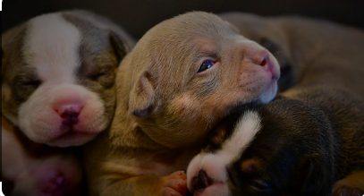
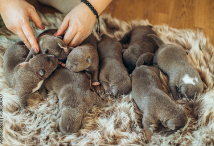
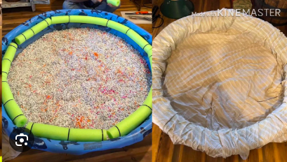
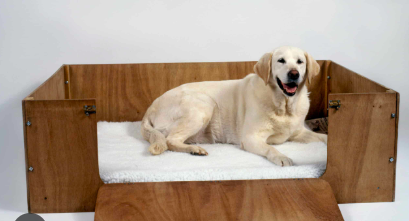

Whelping Puppies for Beginners
So you've done the easy part? You've bred your dog and the puppies are
getting ready to arrive! This webpage is going to inform you on all you
need to know to best whelp puppies. Witnessing the birth of a litter is
exciting, amazing, meaningful, nerve wracking and even gross.


How to Prepare
You’ll need a whelping box in a quiet, temperature-controlled room with
a door to keep mom in and other animals out. Whelping Box: A space
designed for dogs to give birth and raise their puppies until their eyes
and ears open around 2-3 weeks old. You can purchase a whelping box, or
make something as easy as a kennel with a kiddie pool and blanket.
Whelping Box Checklist
-
Large enough room for mom to fully spread out, and get in and out
easily
-
Some kind of bumper between the mom and the side of the box that
prevents the mother from accidentally smushing the puppies against the
side
- Easy to clean and sanitize floor
-
Lots of blankets, whelping is messy and the fluids will get everywhere
and smell terrible, be sure to have enough blankets to change
frequently
-
Temperature in the room should be around 75°F/24°C with no drafts, you
made need to provide supplimental heat, becareful using a space heater


Take Notes
Good notes are valuable to your veterinarian in case of an emergency,
note the date and time of the following whelping events in a Whelping
Log.
- Temperature drops
- Nesting begins
- Appetite diminishes
- Panting starts
- Abdominal straining observed
- Appearance of green, black or reddish-brown vaginal fluid
- When each puppy first appears in birth canal
- When each puppy is fully out of birth canal
How to Predict when Whelping will Occur
The average dog pregnancy lasts about 63 days (9 weeks). I’m not going
to go very deeply into breeding strategies but if you’re dealing with a
planned pregnancy and you know when your dog ovulated you can predict
whelping within a day or two. Ovulation can be predicted by changes in
progesterone or luteinizing hormones. Labor can also be predicted by
measuring progesterone because a drop will occur 12-36 hours before
labor begins. However, these methods require multiple trips to the vet
for blood draws which equals more time, money and stress on your dog.
The dame will do all of the work when it comes to birthing the puppies.
When to intervene: NON EMERGENCIES
-
NON-EMERGENCY #1: Mom does not remove amniotic sac from around
puppy’s head
-
NON-EMERGENCY #2: Mom is chewing through the umbilical cord and
pulling too hard
-
NON-EMERGENCY #3: Mom does not chew through umbilical cord after
several minutes
When to call your vet: EMERGENCIES
- EMERGENCY #1: Puppy is stuck
- EMERGECNY #2: Labor stops abruptly
- EMERGENCY #3: Puppy is not breathing, warm or moving
-
EMERGENCY #4: Puppy emerges from birth canal tail/butt first
(Breech Birth)
-
EMERGENCY #5: Mom is behaving abnormally (eclampsia, shock or
pain)
Sign up below to recieve a beginners whelping kit